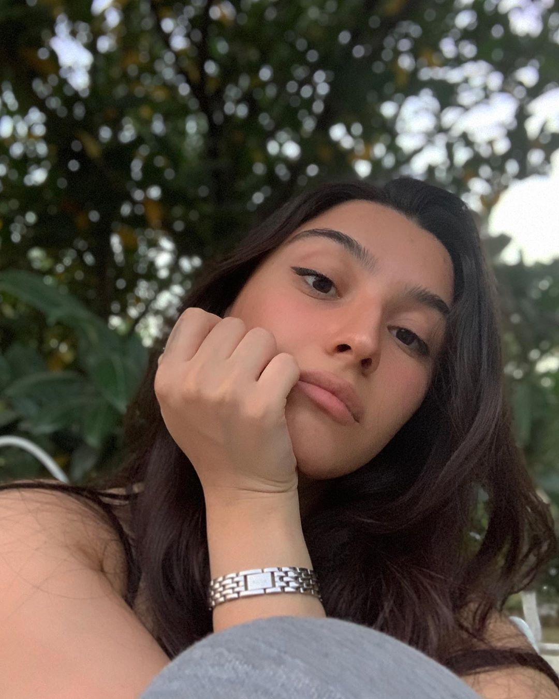
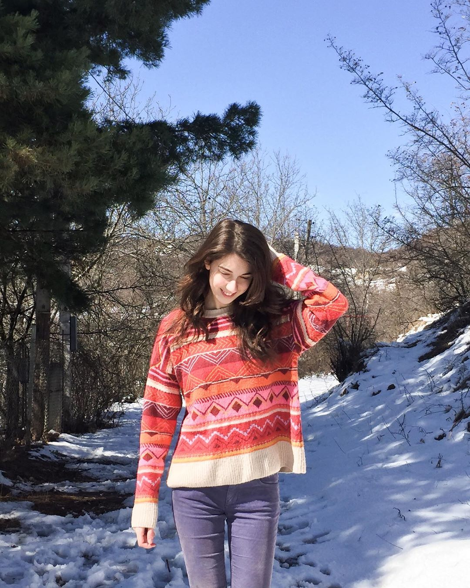
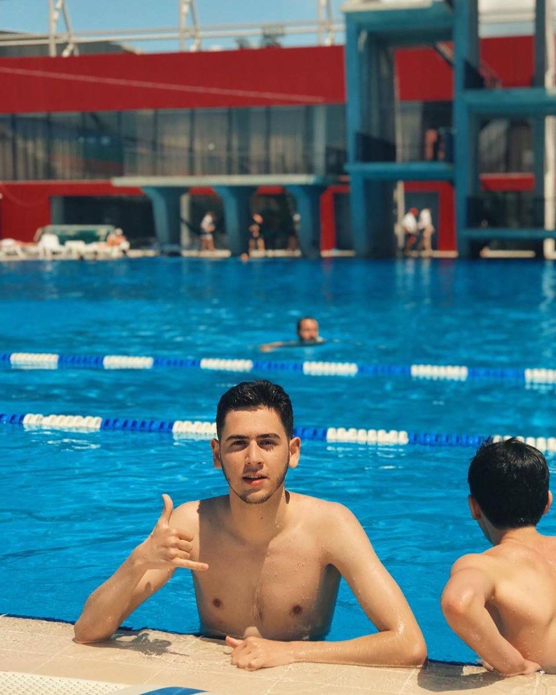

ერეკლე აბაშიძე
ერეკლე აბაშიძე დაიბადა
2001 წლის 30 ივლისს. მას უყვარს
საჭმლის მომზადება, სიმღერა (მახინჯად), 2016 წლის კუპაჟის ქინძმარაული და არიანა გრანდე. ერეკლე რომ
დაიბადა მშობლებმა TheCoolest დაარქვეს, მაგრამ ბაბუას გაუჭედავს არა, ერეკლე დაარქვითო (თურაღაცაეგეთი
მოხდა). ერეკლეს ეკეს ეძახიან სულ, იმიტომ რომ რაის ერეკლე ხალხნო? ერეკლე ასე გამოიყურება, აი:
ანა ბექაური
ანა ბექაური დაიბადა 2001
წლის 17 ოქტომბერს. გატაცებულია
ასტროლოგიით, ხოლო როცა მერკურის რეტროგრადისგან თავისუფალია სამყარო მაშინ მოხიტოს წრუპვით და სამოტივაციო
წიგნების კითხვით ერთობა. ანას ბოლო დროინდელი ჰობია "რამდენად მოკლე დროში შევძლებ მეცადინეობას
გამოცდისთვის" პროკრასტინაციის მაქსიმიზაციის მიზნით.
ანა ასე გამოიყურება, აი:
ანა ყუბანეიშვილი
ანა ყუბანეიშვილი
დაიბადა 2001 წლის 16 დეკემბერს.
წარმოსახვაში გადაცებულია სერფინგით ჰავაის კუნძულებზე. რეალობაში კი ვიოლინოზე დაკვრით და ვარჯიშით.
პირველად პიცა რომ გააკეთა ისე დაწვა, რომ ცარიელი ნახშირი გამოიღო. სანამ თავისუფალში ჩააბარებდა
არქეოლოგიაზე ფიქრობდა. ანა ასე გამოიყურება, აი:
რომან გოჩიაშვილი
რომან გოჩიაშვილი
დაიბადა 2001 წლის 4 მაისს. მას
უყვარს კიორლინგი, ყინულის წმენდა და ერეკლე აბაშიძისხელა (გიჟივით მსუქანი) ბურთების სროლა. პრობლემას
მისთვის ისიც კი არ წარმოადგენს, რომ ამას ახლა იგებს თავადაც პირველად. რომა ძალიან პასუხისმგებლიანი
ბიჭია, არ
არის ცანცარა, დაუოჯახებელია და, მოკლედ დასაქორწინებელმა გოგოებმაც რომ მიწეროთ, არ იწყენს. რომა ასე
გამოიყურება, აი: